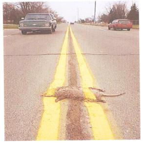

These are the rules that I shall be following:
I shall be sending my blog "tales from Namibia" to the editor.
With thanks to dogme95.
#31 July 2005 | Comments (1)
#29 July 2005 | Comments (1)
An early morning dub, courtesy of tea-supping tisAne from Paris.
Featuring the voice and poetry of Michael Smith, RIP.
#28 July 2005 | Comments (6)
Dear All,
My first post, so a short introduction: I'm setting up a sonic journal.
The idea: Record an event in the day and create an online archive.
The idea continued: The recorded material will be used as an initial sound palette for creating further sonic works in the field of 'found sounds' and will be published either as a CD or online.
Some points: Anyone interested can participate. Recorded material must be of an event (however mundane) and must be of one's own.
First entry today at tisanesound.
I will keep you posted of new entries. You may contact me at: tisanesound@free.fr
#27 July 2005 | Comments (3)
From the vantage point of my place of work, I was last week able to observe the nearly-exploded Hammersmith and City Line train and the railway track and street along which the suspected jihadist fled. Throughout the day my friends and I gazed towards the train, half expecting a combustion of some sorts, which thankfully never happened.
However, on the next day, something more out of the ordinary than an explosion occured. As we gazed through an telescope at the section of road that the terrorist allegedly ran down, which had by this time been cordoned off by police tape, we observed various police officers and sniffer dogs tracing slowly along the road looking for clues. All was humdrum. Then, suddenly, from the periphery of the scope, we caught a glimpse of the most extraodinary figure it has been my (mis)fortune to view, a sight which indelibly scorched itself onto my consciousness.
#27 July 2005 | Comments (1)
So it was hot and humid again and the last thing I wanted to do was set foot outside, away from my A.C. unit. But my Mexicali friend called me and invited me out. Normally, and especially under the circumstances, I would have made up an excuse not to go out. However, having not seen him in a while, I reluctantly accepted.
"My friend is playing a new form of synthesizer in Dumbo, Brooklyn", he told me. "He is playing in an art gallery during a showing of his friend's paintings of audio cables".
I must say it all sounded very intriguing. So off we went in search of this tiny art gallery underneath the Brooklyn bridge.
The artist in question was Eric LoPresti and the music was provided courtesy of Tim "Love" Lee and his brand spankin' new Macbeth Studio Systems M5. The paintings were absolutely surreal as was the music which accompanied them.
It was a very interesting evening to say the least.
Check out the following link for more details and images of Eric's paintings:
#27 July 2005 | Comments (1)
Recently, after waiting 11 years, I heard my favorite screenwriter Paul Schrader's version of The EXORCIST prequel, DOMINION, was being canned in favour of Renny Harlin remaking it.
#26 July 2005 | Comments (0)
This is kinda how I feel today:

Not like the rodent.
Like the road.
Proving: Sometimes, you need to read between the lines.
#26 July 2005 | Comments (1)
While I made toast I learnt that when a policeman shoots someone five times in the back because he had intelligence that they were someone they are not, it is compariable to a competant surgeon losing a patient under unforseen circumstances. I once dropped a decanter when I washed up in a golfcourse kitchen. The manager took money from my wages to replace it.
I was a little confused.
On the way to the Halifax I saw a fist fight between a business man and a casual outside Barclays bank, there was a a crowd growing, the suit got in some good jabs and I left.
A car mounted a curb and wrapped its bonnet around an innocent lamp post. The rain stopped. I jumped the puddle.
My head aches from the weekend, I need to get more medication, I ran out. The rain has been constant.
Grey.
#25 July 2005 | Comments (3)
#25 July 2005 | Comments (6)